الشاشات 3c — Compose المعتمد مقابل XML
مطابق: 28 من 28. يُحسب البكسل مختلفًا إذا لم يوجد في الصورة الأخرى، ضمن إزاحة 1 بكسل، بكسل يقل فرق كل قناة لون فيه عن 24 من 255 (يستبعد تنعيم الخط وموضع النص تحت البكسل — 43 §8). اللقطة «مطابقة» إذا لم تتجاوز نسبة الاختلاف 0.5٪.


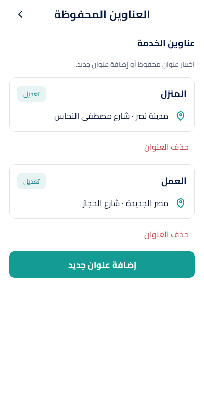
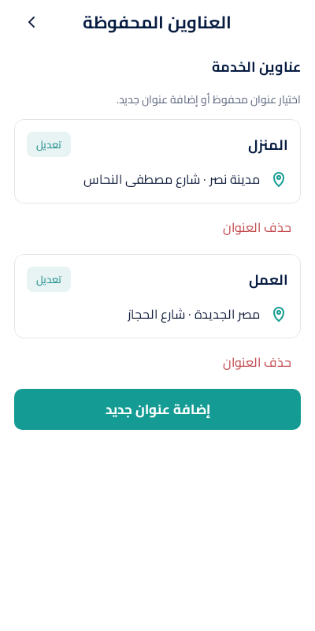
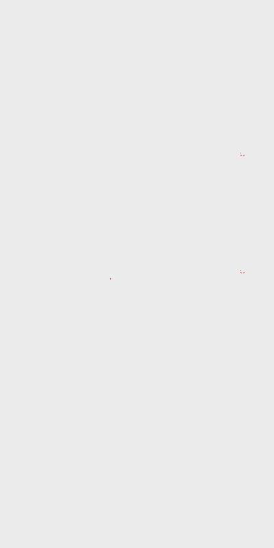
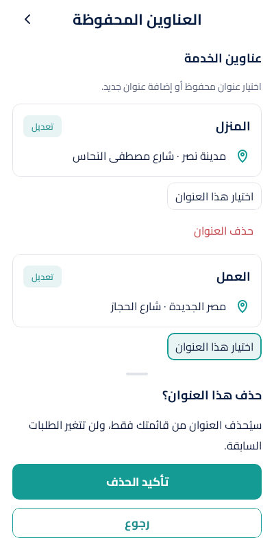
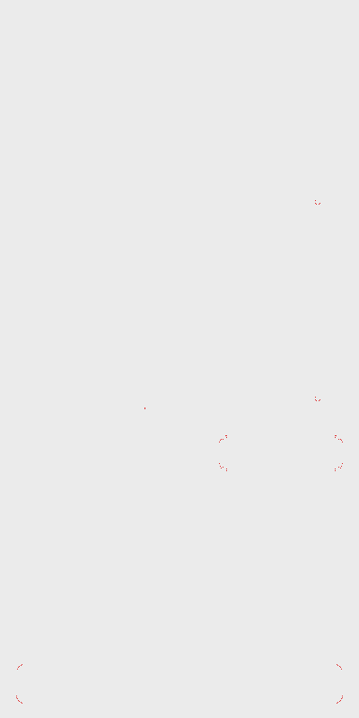


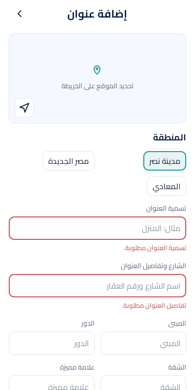
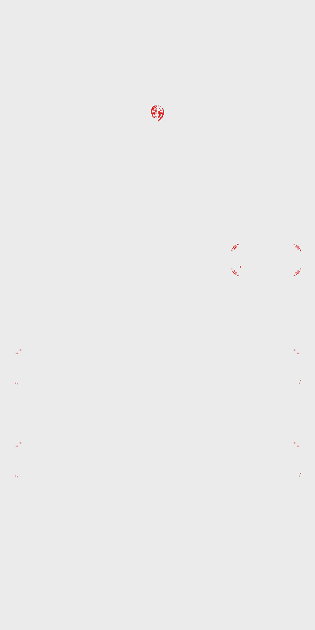


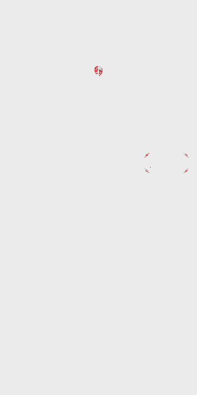
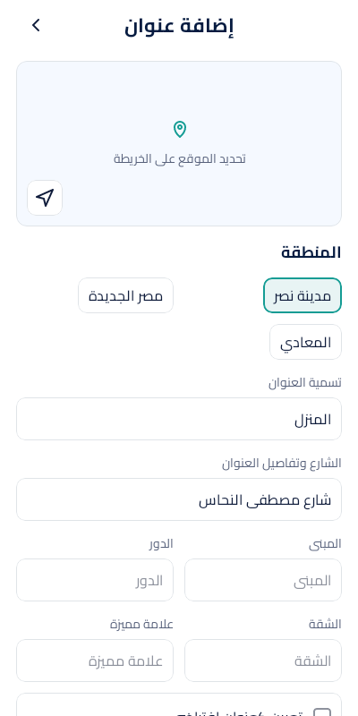


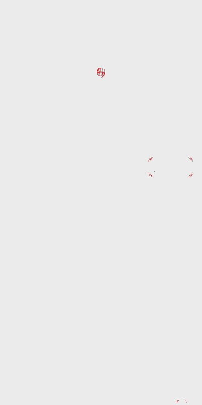
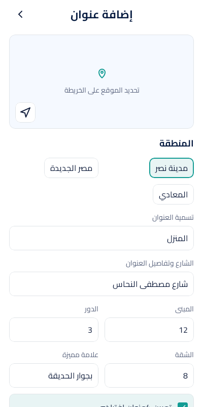


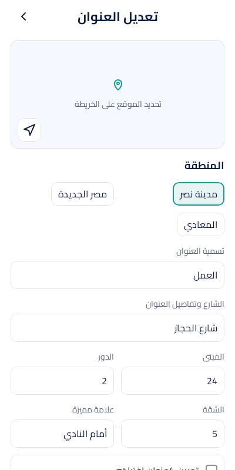


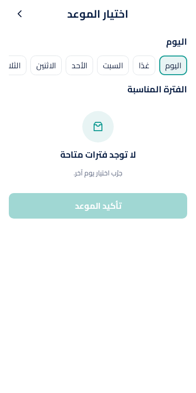
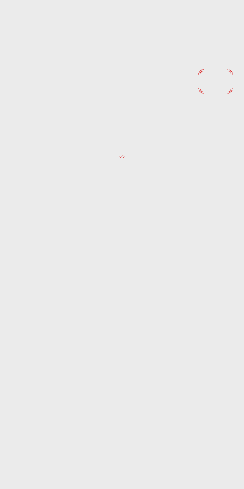


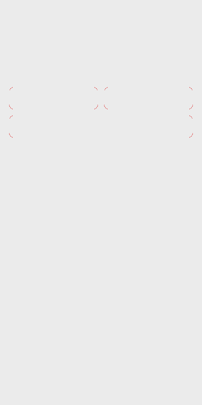
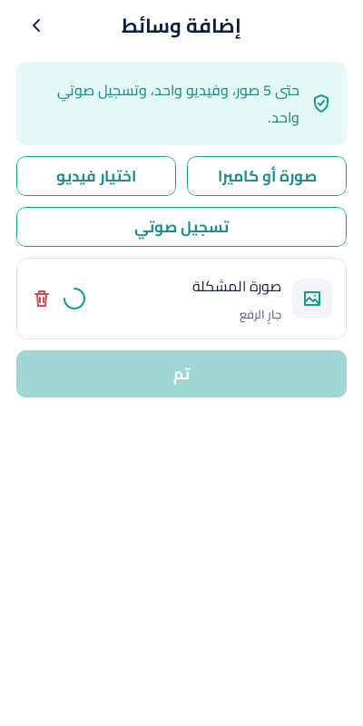
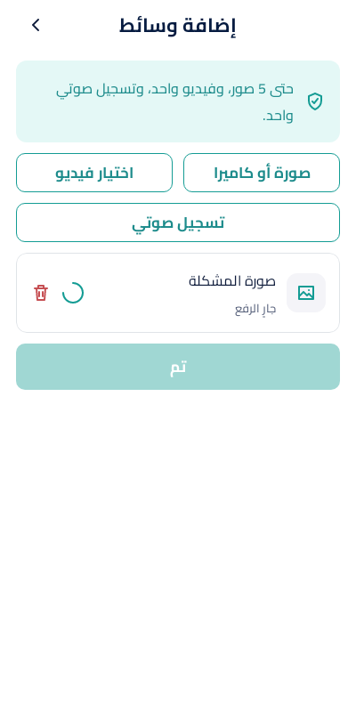

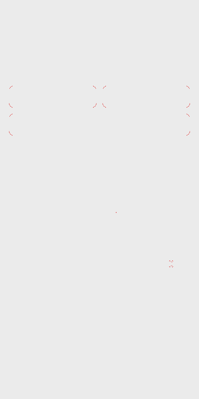
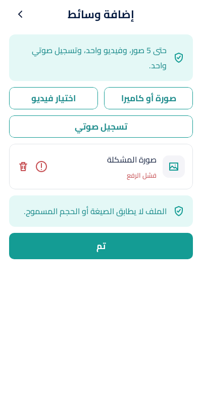


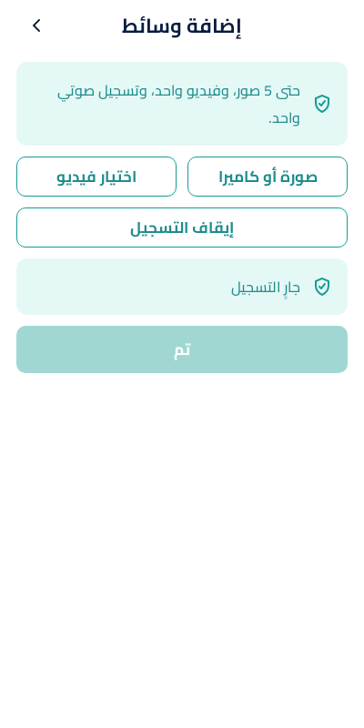